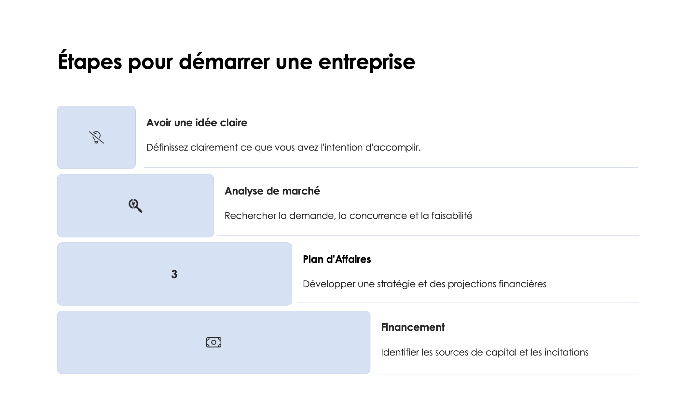
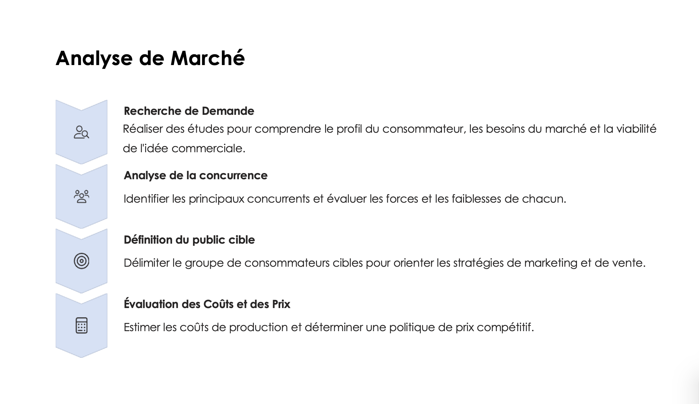
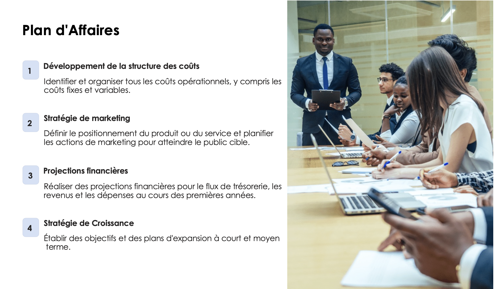
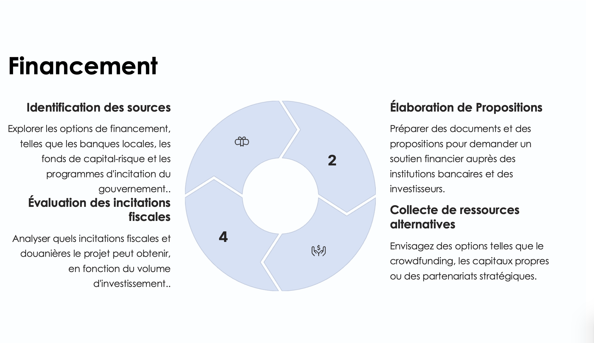
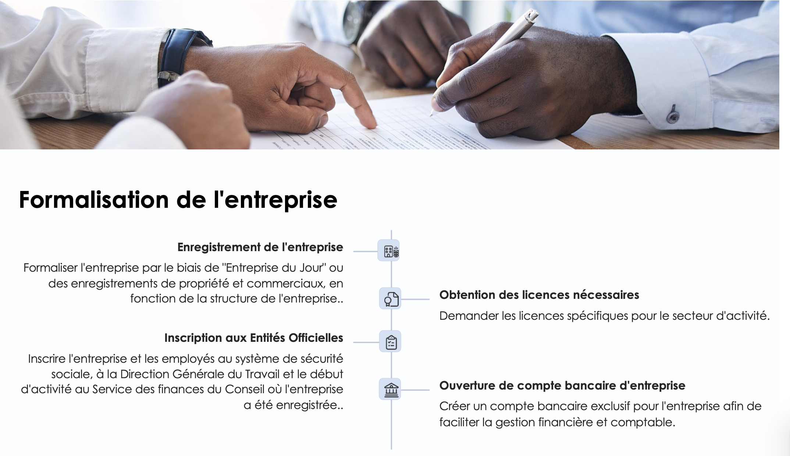
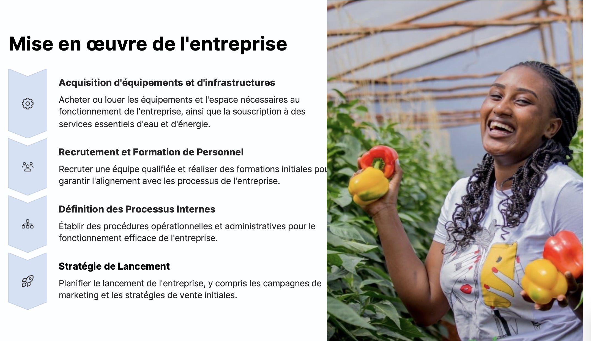
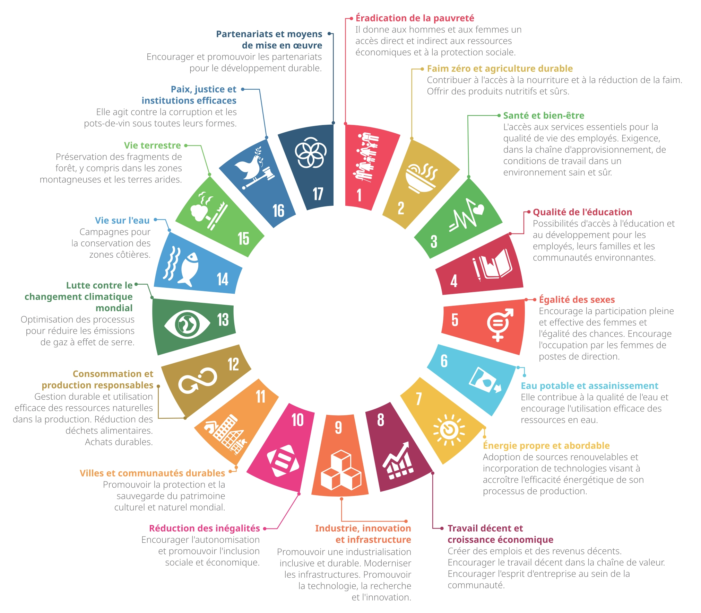
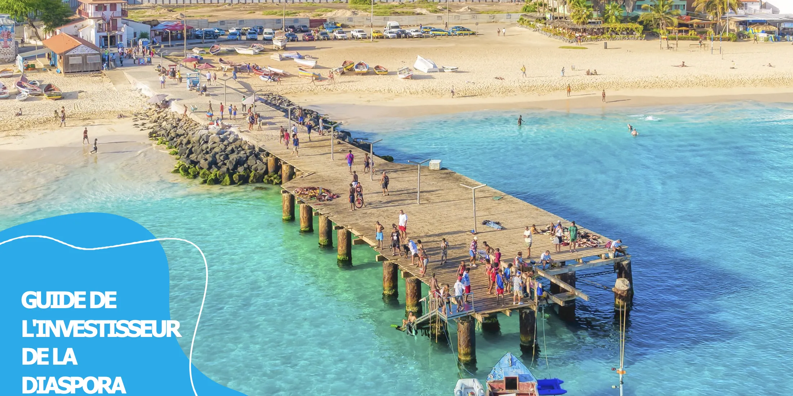

Téléchargez le Guide
Obtenez la version complète du "Guide de l'Investisseur de la Diaspora" pour accéder à toutes les informations détaillées, contacts et ressources nécessaires.
Souhaiterais-tu investir au Cabo Verde ? Alors tu es au bon endroit ! Ce site présente le Guide de l'Investisseur de la Diaspora, créé pour t'aider à transformer des idées en affaires. Découvre des opportunités d'investissement, des incitations du gouvernement et des orientations pratiques pour investir en sécurité et contribuer à un développement durable au Cabo Verde.
Télécharger le GuideLe Cabo Verde a un environnement d'affaires attractif et propice à l'investissement, avec divers avantages stratégiques qui renforcent la confiance des investisseurs :
Situé au croisement entre l'Europe, l'Afrique et l'Amérique, le Cabo Verde est un point de connexion pour le commerce et les affaires internationales.
Le pays est reconnu pour sa démocratie consolidée, sa paix sociale et sa gouvernance stable, facteurs fondamentaux pour la sécurité de l'investissement.
Des investissements continus dans les ports, aéroports, routes et réseaux énergétiques garantissent de bonnes conditions pour le développement entrepreneurial.
La monnaie nationale (Escudo Cap-Verdien) est indexée à l'Euro, offrant une stabilité cambiale pour les investisseurs étrangers.
Le Cabo Verde possède un climat tropical modéré et stable tout au long de l'année, sans enregistrement d'épidémies ou de risques significatifs pour la santé publique.
Les politiques économiques permettent le transfert de fonds et le rapatriement des capitaux sans restrictions, favorisant les investissements internationaux.
Le pays maintient un fort engagement envers l'État de Droit, promouvant un environnement sécurisé et prévisible pour les affaires.
Le Cabo Verde compte une population jeune et capable, avec une qualification technique et professionnelle croissante, devenant attractif pour les secteurs innovants et technologiques.
Le Statut d'Investisseur de la Diaspora est une certification offerte par le Gouvernement du Cabo Verde pour reconnaître et faciliter les investissements des Cap-Verdiens résidant à l'étranger. Ce statut fournit une série de bénéfices fiscaux, douaniers et administratifs, permettant à la diaspora de participer activement au développement économique du pays et d'accéder à des conditions avantageuses pour initier et développer des affaires.
Dans l'acquisition de biens immobiliers pour l'installation de projets.
Dans les contrats de financement et opérations de crédit.
Dans l'importation de biens et équipements nécessaires pour le projet.
L'État participe jusqu'à 50% des coûts de formation dans la première année d'activité.
Des incitations fiscales supplémentaires peuvent être appliquées à des projets dans des zones de moindre développement économique, incluant un soutien logistique et financier.
Explorez les opportunités uniques du Cabo Verde, de Santo Antão à Brava. Cliquez sur les points de la carte pour découvrir comment les ressources naturelles et le potentiel économique peuvent transformer des visions entrepreneuriales en réalité.

Le microclimat, le sol fertile et la disponibilité d'eau dans diverses vallées à S. Antão confèrent un potentiel突出 à la production agricole. Développement de chaînes de valeur pour produits agricoles et agro-industriels.
Expansion de l'offre de sentiers et itinéraires pour touristes intéressés par la nature.
Investissements dans la valorisation du café local, renforçant sa commercialisation internationale.
Développement de projets d'énergie solaire et éolienne pour l'approvisionnement local et l'exportation d'énergie.
Création d'unités de traitement et de stockage du poisson pour l'exportation et l'hôtellerie au Cabo Verde.
Soutien à la production culturelle, événements, musique et arts pour favoriser le secteur créatif de l'île.
L'île possède une forte tradition de pêche, avec des ressources marines importantes. Il y a un potentiel pour des investissements en traitement et exportation de poisson, y compris la création d'installations modernes de stockage et d'emballage pour les marchés externes et l'hôtellerie et la restauration dans le pays.
Le terrain fertile dans des zones spécifiques de l'île permet la production de fruits et d'horticulture de haute qualité. Des investissements en technologies agricoles modernes peuvent augmenter la productivité et la résilience des cultures.
La beauté naturelle de São Nicolau, avec des sentiers écologiques et des paysages montagneux, offre des opportunités pour le développement de l'écotourisme et du tourisme d'aventure. Des entreprises qui promeuvent la durabilité environnementale, comme des lodges écologiques, ont un grand potentiel.
Développement de resorts de haut standing, spas de bien-être, expériences gastronomiques exclusives et activités personnalisées pour touristes à haut pouvoir d'achat.
Expansion de services orientés vers le kitesurf, la plongée et les promenades en yacht, profitant des conditions naturelles uniques de l'île.
Création de centres d'événements et de conférences de standard international, avec un focus sur la capture d'un segment différencié de touristes.
Développement de resorts à grande échelle, capables d'accueillir de grands volumes de touristes avec des offres de paquets “tout inclus”.
Création d'attractions comme des parcs aquatiques, centres culturels et expériences interactives qui diversifient l'offre touristique et attirent les familles.
Organisation de grands événements, festivals de musique et compétitions sportives qui utilisent l'infrastructure et les ressources naturelles de l'île.
Projets d'énergie solaire et éolienne, profitant des ressources naturelles de l'île.
Développement d'éco-lodges et expériences de tourisme de nature.
Modernisation des pratiques de pêche et création d'unités de traitement pour le marché domestique, avec un intérêt spécial pour le marché hôtelier, ainsi que l'exportation.
Santiago est une île avec un sol fertile et une grande population, idéale pour des investissements en agriculture et transformation de produits horticoles et fruitiers.
Avec un fort héritage historique et culturel, Santiago offre des opportunités dans le développement du tourisme culturel et rural.
L'île de Santiago, en tant que centre administratif et économique du Cabo Verde, présente un vaste potentiel pour le développement du secteur des Technologies de l'Information et de la Communication (TIC). La capitale, Praia, à partir du Tech Park et des diverses facultés de science et technologie, est le noyau stratégique pour la mise en œuvre de solutions technologiques qui peuvent impulser la digitalisation du pays et de la région émergente de l'Afrique de l'Ouest.
Opportunités dans la création d'infrastructures et de paquets touristiques orientés vers le tourisme d'aventure et l'exploration du volcan.
Expansion de la production de vins locaux de haute qualité, avec potentiel pour l'exportation et le développement de l'œnotourisme.
Développement de chaînes de valeur en produits agricoles adaptés au sol volcanique, comme le café et les fruits tropicaux, avec un focus sur l'exportation et l'approvisionnement du secteur hôtelier.
Développement de cultures agricoles adaptées au climat local, avec un focus sur l'exportation et la sécurité alimentaire.
Investissements en écotourisme et hébergements durables pour explorer le potentiel naturel de l'île.
Création de pépinières pour la culture de plantes exotiques et médicinales pour les marchés locaux et internationaux.
Suivez ces étapes pour transformer votre idée en un projet réussi au Cabo Verde.






Guidés par les valeurs d'intégrité, l'objectif des principes orientateurs suivants pour la valorisation des personnes, du travail et des entreprises, est d'adopter une ligne commune sur des mesures et initiatives destinées à améliorer la valorisation des investissements au Cabo Verde
Découvrez ici l'énorme potentiel de la contribution du Secteur Privé pour atteindre l'Agenda 2030 de l'ONU

"Il faut planifier, avoir beaucoup de force de volonté, détermination, courage et y aller 'à fond'. Ce qui nous motive, c'est l'amour pour cette terre qui nous fait affronter ses défis."
"J'ai créé en 2010 une entreprise qui est aujourd'hui la plus grande entreprise CABO-VERDIENNE dans le secteur technologique et emploie plus de 20 personnes directement et 50-60 indirectement. Nous avons un potentiel énorme de croissance car nous opérons dans le domaine de l'infrastructure du pays. La force propulsive des affaires que nous avons créées était le désir d'aider au développement du pays où je suis né."
"J'encourage toutes les personnes à investir dans le pays à cause du potentiel existant et du large spectre d'opportunités. J'encourage à faire le travail de terrain, à parler avec les gens et à identifier les opportunités."
Institutions publiques essentielles pour faciliter l'investissement de la diaspora au Cabo Verde, offrant des services spécialisés et un soutien institutionnel.
Cliquez pour voir plus d'informations
Mission : Régulation et soutien aux divers secteurs économiques à travers des Directions Générales et Instituts Publics.
Chambres : www.ccb.cv | www.ccs.cv
Cliquez pour voir plus d'informations
Mission : Faciliter et accréditer l'investissement de la diaspora au Cabo Verde, promouvant l'intégration des investisseurs à l'extérieur.
Site web : www.mdc.gov.cv

Cliquez pour voir plus d'informations
Mission : Un lieu pour connecter le Cabo Verde avec sa communauté dans le monde.
Boston, Lisbonne, Praia, Santa Catarina, Tarrafal, Maio, et autres municipalités.
Site web : www.investidordadiaspora.cv

Cliquez pour voir plus d'informations
Mission : Coordonner le processus d'investissement, réception, analyse et contractualisation des projets.
Site web : www.cvtradeinvest.com
Cliquez pour voir plus d'informations
Mission : Soutenir la création et le développement de petites et moyennes entreprises.
Site web : www.proempresa.cv
Cliquez pour voir plus d'informations
Mission : Fournir des solutions de capital-risque pour projets innovants.
Site web : www.procapital.cv
Obtenez la version complète du "Guide de l'Investisseur de la Diaspora" pour accéder à toutes les informations détaillées, contacts et ressources nécessaires.
